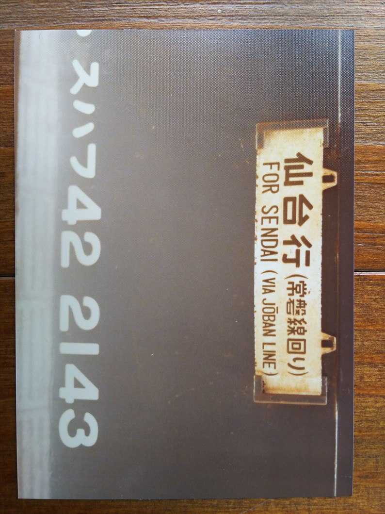
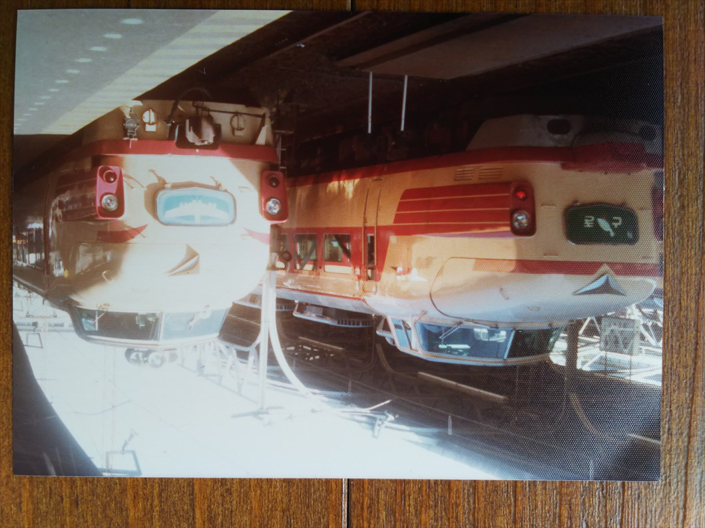

ざんな目に遭いましたが、下山後は私の希望も聞いてもらって、東京に寄り道することとなりました。
８月１０日。
下山した翌日に富士五湖めぐりの観光バスに乗りま
した。多分その途中で撮った富士急ですね。
観光バスを降りて三島から東京に向かいました。
三島駅に停まる伊豆箱根鉄道。
国鉄ホームから撮った元西武車。
三島駅にて、デビュー数年の１８５系踊り子。もち
ろん、乗ってません。
三島駅を通過する団体列車と思われます。
そう、東京ミニ周遊券で来てるので、東京までは追
加料金不要の急行東海の自由席でした。
東京到着後、上野駅に移動して撮影大会の開始です！
フラッシュなし三脚なしではこんな状態に・・・
これは寝台特急北星。
はくたか。
寝台特急ゆうづる。
夜行急行の妙高。
さて、もちろん翌日も撮影ダイカイです！
錦糸町のホテルに泊まってた記憶があります。なの
でまずは近くの両国駅へ。
この頃はまだ房総急行が残ってました。房総急行は
ヘッドマークが残ってたので、撮り甲斐がありまし
た。
急いで上野に戻って、東北在来線特急の撮影に入り
ます。
新幹線リレー号と青森行特急のはつかりとの並び。
この年の６月、すでに大宮－盛岡間で新幹線は開業
していましたが、昼行の特急も結構残ってる時期で
した。
そもそも、なぜ６月という中途半端な時期に開業し
たのか謎です。１１月の改正ではつかりは盛岡－青
森間に短縮されます。
特急ひたち。常磐線特急なので今でもバリバリ走っ
てますね。
特急あさま。長野まで新幹線が伸びるまで走ってましたね。
特急やまばと。上野－山形間を結んでいた特急で、１１月の改正後も、
新幹線上野開業まで残っていましたね。
急行津軽。青森発で奥羽本線経由で上野に到着した
ところです。
錦糸町に戻って房総急行の続き。
たしか以上の４種類でコンプリートのはずです。房
総特急・急行は、関西の人間にとってはどこ走って
んのかイマイチわからん列車でした。

再び上野に戻ってきました。ＥＦ６２の単機ですね。
特急つばさ。上野－秋田間を結んでいた特急で、こちらも１１月の改正
後も、残っていました。
その後、山形新幹線に名前を譲ります。
上野と会津若松を結んでいた特急あいづ。
こちらもこの後約１０年、走り続けます。

これこれこれ。
この時の撮影の目玉のひとつです。当時、唯一の上野口の雑客の普通です。
ピントもばっちりやね。仙台まで乗ってみたかったなぁ。
特急ひばり。上野－仙台間の東北特急の王道です。
でも名前はダサいなと思ってました。
この時点でも残っていましたが、１１月の改正で廃止されました。
もういっちょ、はつかり。
常磐線経由の青森行の特急みちのく。
こっちも、ダサい名前と思ってた特急です。１１月の改正で廃止され
ました。
軽井沢行の特急そよかぜ。夏場だけの運転やった記憶が・・・
信越本線経由金沢行の特急白山。
学生時代、関東の友人は帰省でよく使ってました。
常磐線の普通電車。
急行やけど、何やろ？この当時、急行で１８５系に
あたったら超ラッキーのはずです。
この時の撮影のもうひとつの目玉。１８１系の新潟行の特急とき。
１編成しか残ってなくてマニアには人気でしたが、ダサいなぁと思って
ました。

上越線経由の金沢行特急はくたかとの並び。
やっぱ、ダサいよな？
残念ながらここでタイムアップ。後ろ髪引かれる思いで
東京駅に向かって新幹線で帰りました。
しかし、父親もよー待ってたな。